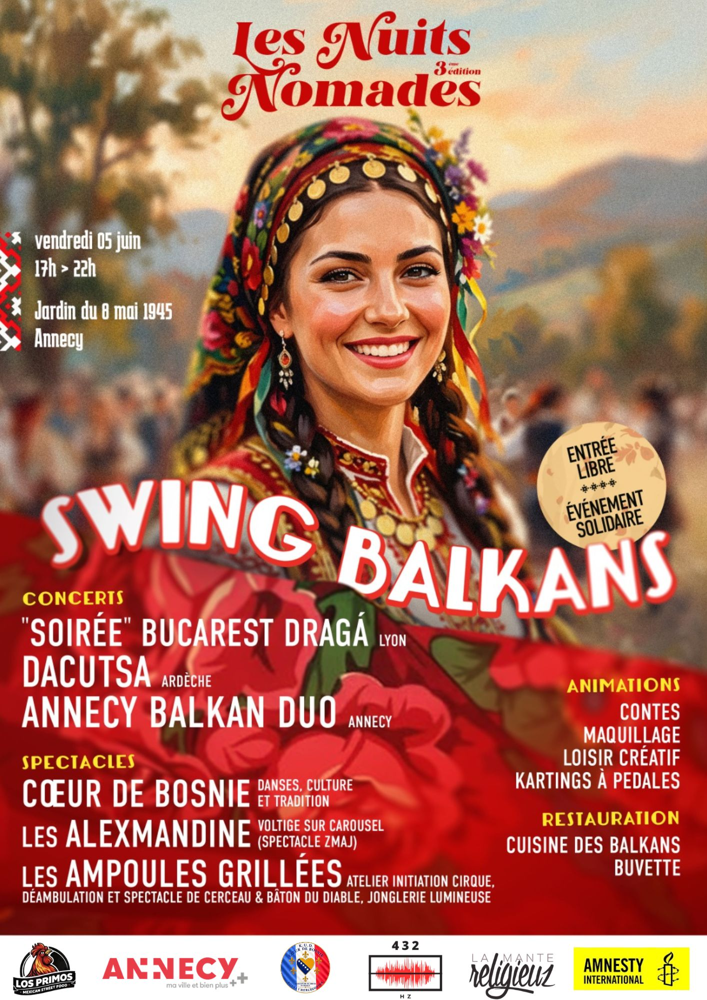
3ème Édition · 2026
Les Nuits
Nomades
« édition #3 »
Swing Balkans
Vendredi 05 Juin
Swing Balkans
Un voyage musical et sensoriel à travers la péninsule balkanique — mélodies tsiganes, swing manouche et danses traditionnelles vous accompagneront jusqu'à la tombée de la nuit.
Les Balkans, situés en Europe du Sud-Est, couvrent une aire de plus de 550 000 km² et regroupent près de 53 millions d'habitants. Une mosaïque de cultures, de langues et de traditions où les peuples se croisent depuis des siècles au rythme des mêmes mélodies.
Les Nuits Nomades vous invitent à un merveilleux voyage à la découverte de la Bosnie-Herzégovine, de la Serbie, du Kosovo, de l'Albanie, du Monténégro, de la Bulgarie, de la Macédoine du Nord et de la Roumanie.
Embarquez pour une soirée où violon, accordéon, guitare manouche et voix chaudes vous transporteront du Vieux Pont de Mostar aux plages de Dhërmi, en passant par les montagnes du Šar et le parc national de Tara.
Nos Valeurs
Le Projet
Les Nuits Nomades
Les Nuits Nomades défendent un accès gratuit à la culture dans l'espace public afin de favoriser la rencontre entre les habitants, de soutenir les artistes et de proposer des temps festifs accessibles à tous les publics.
Rdv Vendredi 5 Juin, 17h à 22h, jardin du 8 mai 1945 qui se transformera, le temps d'une parenthèse enchantée, en lieu de fête et de découvertes. Un événement pour renforcer le lien social à l'échelle locale.
Le voyage ne fait que commencer…
Le Vivre Ensemble
À la fois festif et inclusif, il vise à rassembler des personnes de tous horizons, origines culturelles et générations variées, dans un même espace de partage et d'échange.
Un Événement Pour Tous
L'accès gratuit garantit qu'il soit ouvert à tous, quels que soient l'âge, le statut social ou les origines. Le parc devient un lieu de rencontre où les frontières s'effacent.
Projet Solidaire
En mobilisant le tissu associatif local et international, l'association 432 HZ permet à des projets solidaires de financer une partie de leurs actions.
Soutenir les Artistes
La programmation propose un espace d'expression à des artistes du territoire, du monde du spectacle vivant, en rémunérant chacun·e pour la prestation proposée.
17h – 22h
La Programmation
Cinq heures de musique, danse, conte et cirque sous les étoiles balkaniques.
Annecy Balkan Duo
Alexandra Beaujard & Amélie Boissonnet (Annecy)
Un violon, un accordéon et une voix pour enchanter les mélodies et chants tsiganes des Balkans. C'est durant un voyage de 10 ans en roulotte dans les pays de l'Est qu'Alexandra collecta des centaines de mélodies et chansons originales — un duo énergique et festif, plein de sensibilité.
Repérée par Tony Gatlif, elle participa au film Transylvania. Aujourd'hui, Alexandra et son violon virevoltent avec puissance pour ce premier concert festif et convivial.
Contes des Balkans
Debora Barthe
Les contes circulent d'oreilles en bouches. Ils disent ce qu'ils savent du monde. Ceux-là sont originaires des Balkans. Ils ont beaucoup voyagé, d'oreille en bouche et de bouche en oreille, dans leur langue d'origine et puis dans d'autres aussi. Voyons ce qu'ils nous disent.
Cœur de Bosnie — Danses traditionnelles (partie 1)
Démonstration de danses
Une troupe de danseurs vous emmène au cœur des traditions bosniaques. Costumes, pas et rythmes ancestraux pour une démonstration vivante de la culture des Balkans.
Dacutsa — Swing Manouche / Jazz
Cyrille Daras, Ludovic Beaudoin & Nicolas Paugam (Ardèche)
Depuis sa création il y a 20 ans par Ludovic et Cyrille, guitaristes nourris de jazz manouche et de musique tsigane, Dacutsa s'est imposé comme un groupe à l'identité forte, mêlant virtuosité, émotion, rencontres humaines et voyages.
Aujourd'hui, le duo refonde un nouveau trio avec l'arrivée de deux musiciens singuliers : Ludovic Baudoin (contrebassiste, musique classique) et Nicolas Paugam (guitariste auteur-compositeur, influences pop, brésiliennes, jazz). Un univers où tsigane et manouche se mêlent aux harmonies classiques et aux musiques du monde.
Voltige sur Carousel — Spectacle Zmaj
Les Alexmandine
Un soir qu'elle n'a pas sommeil, Ana fait la rencontre d'une créature ailée, le temps d'une danse aérienne… Voltige, poésie et grâce sous les premières étoiles.
Soirée Bucarest Dragá
Léonore Grollemund · Elie Hackel · Félix Semet · Marius Kiktef (Lyon)
Bucarest Dragá, c'est la rencontre de 4 musiciens amoureux des mélodies tsiganes des Balkans : Léonore Grollemund au violoncelle, Elie Hackel au violon, Félix Semet et Marius Kiktef aux guitares.
Au retour de leurs voyages respectifs dans la région, ils rendent hommage à ceux et celles qui ont transmis l'ardeur. Bucarest représente simplement la fleur de cette tradition, mais elle porte dans son sillage toutes les capitales des Balkans et l'esprit des musiciens Roumains, Albanais, Bosniens, Serbes, Kosovars, Hongrois…
Cœur de Bosnie — Danses traditionnelles (partie 2)
Démonstration finale
Retour de la troupe pour le clap final : danses en cercle, chants polyphoniques et envolées festives.
Jonglage Lumineux
Les Ampoules Grillées
Performance de cerceau et de bâton du diable lumineux par les 2 artistes de la troupe. Une clôture en lumière pour terminer la soirée dans la magie.
Le Lieu
Jardin du 8 Mai 1945
Annecy · Cran-Gevrier

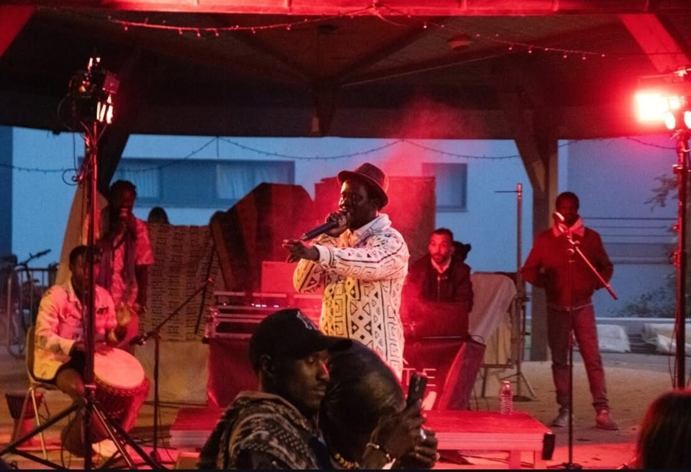
Le parc, espace de verdure au cœur du quartier Chorus, accueillera cet événement de plein air.
Espace de partage et de rencontres, l'événement emmènera le public, l'espace d'une soirée, de la Bosnie à la Roumanie, en passant par la chaîne de montagnes du Šar, les plages de Dhërmi, le Monténégro et le parc national de Tara.
74960 Cran-Gevrier · Annecy
Village Éphémère
Mais Aussi…
Bien plus qu'un concert — un véritable village balkanique éphémère.
Performance Cirque
Atelier d'initiation cirque, déambulation et spectacle de cerceau & bâton du diable par Les Ampoules Grillées.
Animations Enfants
Contes, maquillage, loisir créatif, karting à pédales… tout pour ravir petits et grands.
Voltige sur Carousel
Spectacle aérien Zmaj par Les Alexmandine — voltige poétique et acrobaties sous les étoiles.
Cuisine des Balkans
Ćevapi, burek, sarma, ajvar… laissez-vous tenter par une véritable explosion de saveurs balkaniques.
Espace Buvette
Bières artisanales, rakija et boissons rafraîchissantes — un espace de convivialité pour s'hydrater entre les concerts.
Conte des Balkans
Debora Barthe partage les histoires anciennes des peuples balkaniques — voyages d'oreille en bouche.
Rétrospective · 2026
#2 — Que Onda !
Sous le signe du Mexique — 24 avril 2026.
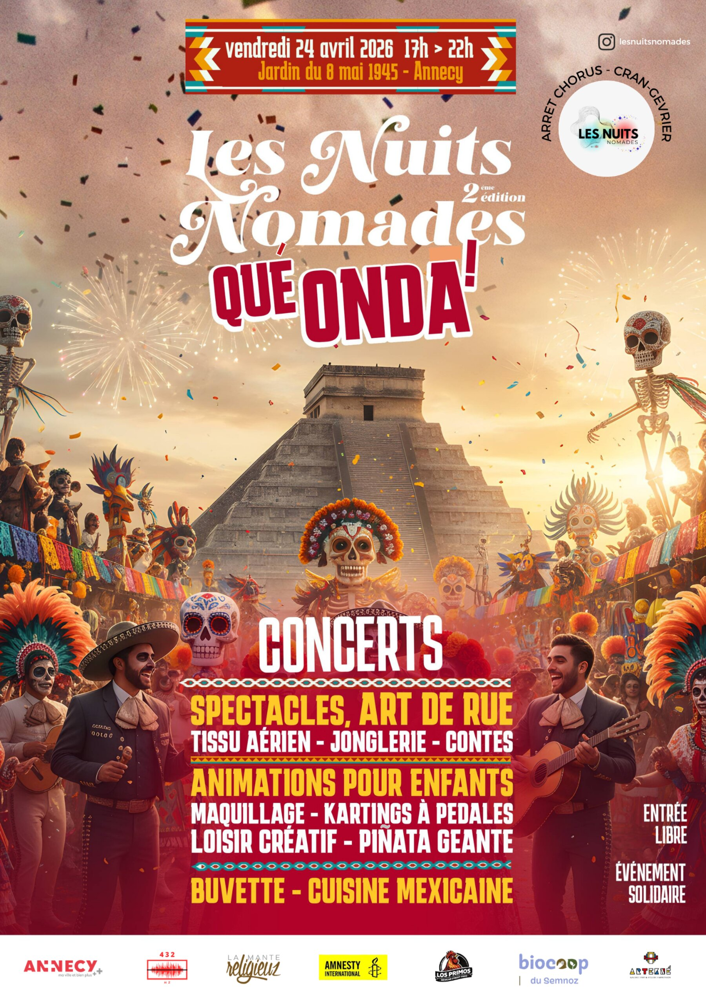
Après le succès d'Africa Teranga, la 2ème édition a placé le festival sous le signe du Mexique. Mariachis, son jarocho, contes, tissu aérien, piñatas et cuisine mexicaine ont enflammé le Jardin du 8 Mai 1945 pour une soirée mémorable.
Une édition record qui a doublé l'audience et la mobilisation bénévole — la preuve que l'aventure des Nuits Nomades trouve son public.
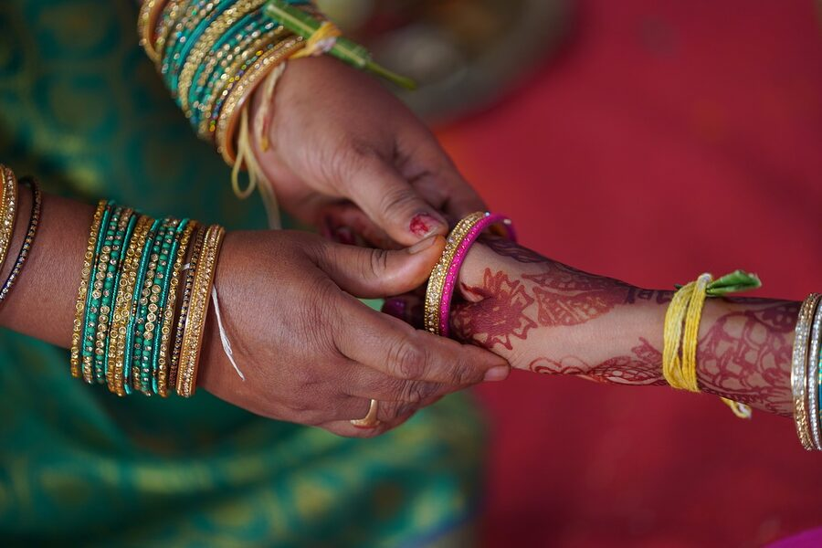
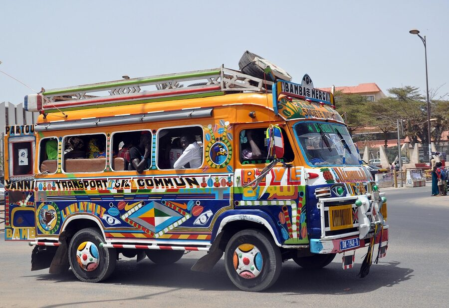
Rétrospective · 2025
#1 — Africa Teranga
L'hospitalité sénégalaise — 16 mai 2025.
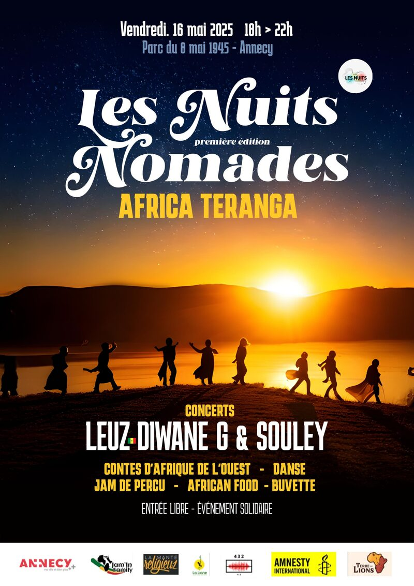
Le terme « teranga » vient du wolof, langue parlée au Sénégal — il désigne l'hospitalité, la générosité et l'accueil chaleureux réservé aux invités. Une valeur profondément ancrée dans la culture sénégalaise.
La première édition fut une invitation à voyager, découvrir et célébrer la culture sénégalaise — musique, danse, contes et nourriture ancestrale — pour une expérience inoubliable au pied de chez vous.
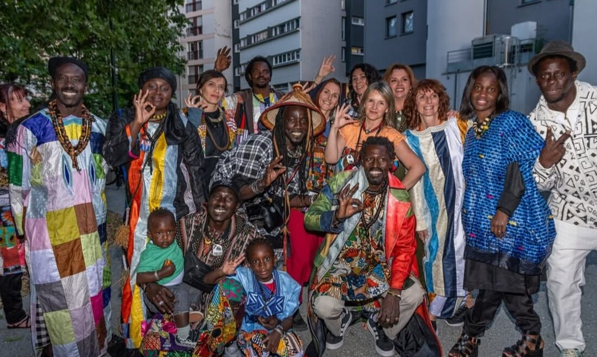
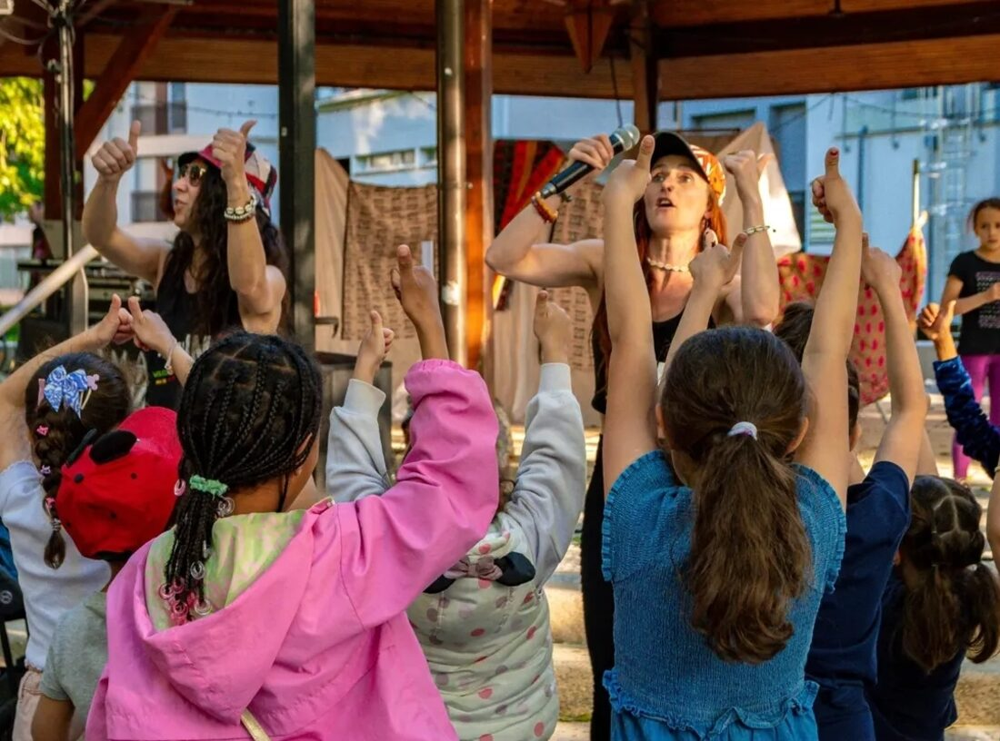
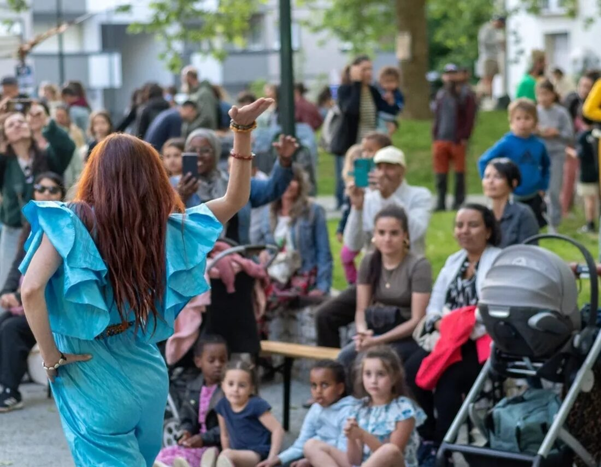
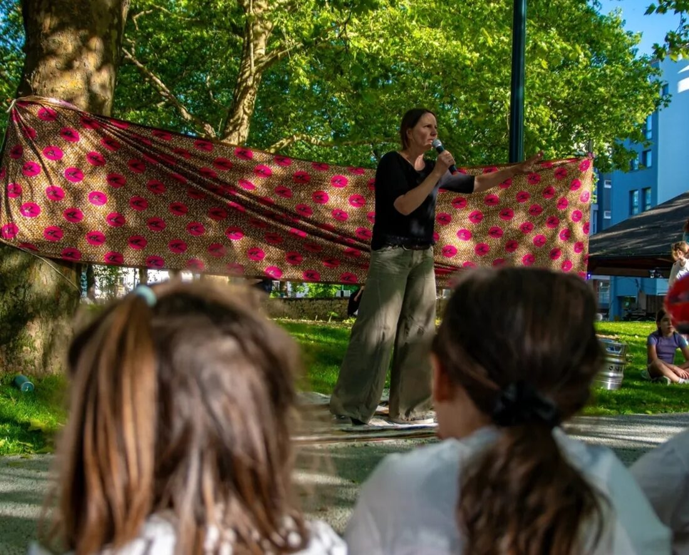
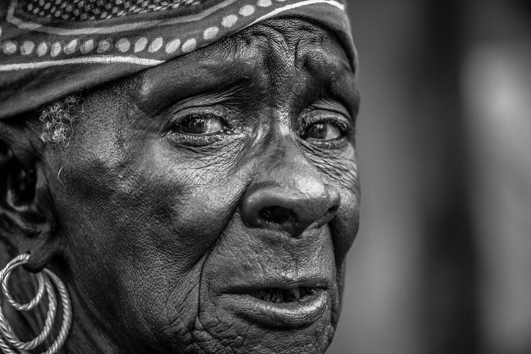
L'Association
432 HZ
Qui sommes-nous ?
L'association, créée en 2021, a pour objet :
- La promotion et la diffusion du spectacle vivant.
- L'organisation de manifestations culturelles (concerts, spectacles, performances, fêtes de quartier).
- La réalisation d'activités à but éducatif et préventif.
En janvier 2026, l'association compte :
Merci
Les Partenaires
Sans eux, l'événement n'aurait pas pu exister !